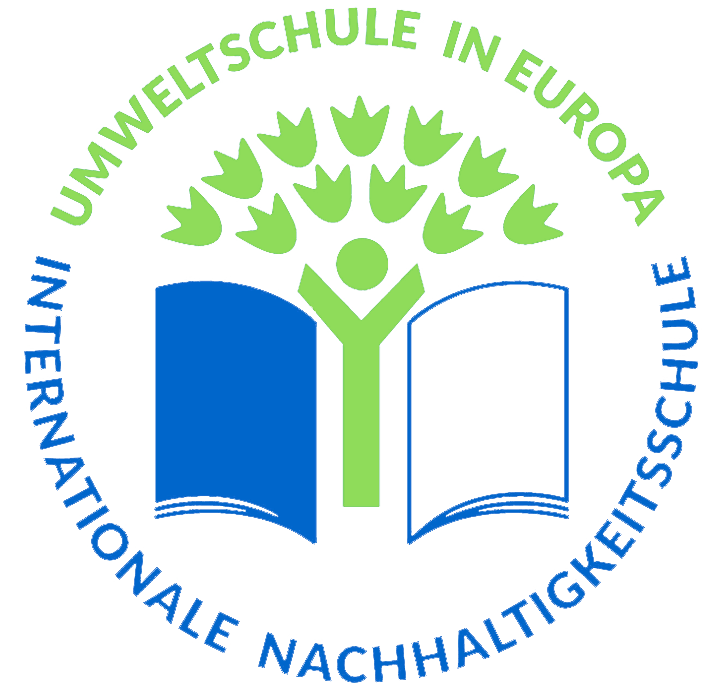

Über Umweltschule

Hey Du, cool, dass du hier bist und dich über Umweltschutz an unserer
Schule informieren möchtest.

Die BS24 ist seit 2017 als Umweltschule ausgezeichnet. Diese
Auszeichnung möchten wir auch im diesen Jahr behalten. Dazu ist es nötig
Projekte gemeinsam mit Schüler*innen durchzuführen.
Eines dieser Projekte ist das „Schule 4.0“. Dieses Projekt konzentriert
sich auf den Ressourcenverbrauch an der BS24 und wie dieser reduziert
werden kann. Die erarbeiteten Ergebnisse findest du hier:
Warum möchten wir die Auszeichnung erhalten?
Die Auszeichnung fördert…
-
die Beteiligung von uns an solchen Projekten und ermöglicht uns
Selbstwirksamkeit.
-
unser Interesse und den Einsatz für eine nachhaltige Entwicklung.
-
nachhaltig eine Schulentwicklung für eine umweltfreundliche Zukunft.
-
das Umweltbewusstsein von uns allen und der Lehrer*innen an der
Schule.
Energie
In diesem Abschnitt findest du Infos zu dem Thema “Energie” was wir in
der Schule erarbeitet haben. Da Erzeugung der Energie am Meisten CO²
verbraucht, ist dies ein wichtiges Thema für alle, welcher für den
Schutz der Umwelt wichtig ist. Denn Energie wie Strom und Gas nutzt so
gut wie jeder Zuhause oder auf der Arbeit wie das BBW und die Schule
auch. Doch man muss sich fragen…
-
Wie sieht es im BBW mit dem Verbrauch von Strom sowie Gas aus und
welchen Anbieter haben wir?
-
Wie können wir in der Schule in kooperation mit dem BBW Energie selbst
einsparen und evtl. reproduzieren damit wir, der Umwelt etwas gutes
tun können.
Genau diese Fragen haben wir einem Mitarbeiter vom BBW in einem
Interview gestellt und haben diese Antworten für dich im nachfolgenden
Video bereitgestellt.
Papier
Im Folgenden erhältst du hier wichtige Informationen zum Thema
verantwortungsbewusster und nachhaltiger Umgang mit Papier. Zudem
bekommst du einen Überblick über verschiedene Prüfsiegel, welche eine
ressourcenschonende Verwertung und Herstellung von Papier sicherstellen.
Im Weiteren findest du hier nützliche Tipps und ein anschauliches
Erklärvideo.
Viel Spaß beim Erkunden.
Flyer Herunterladen